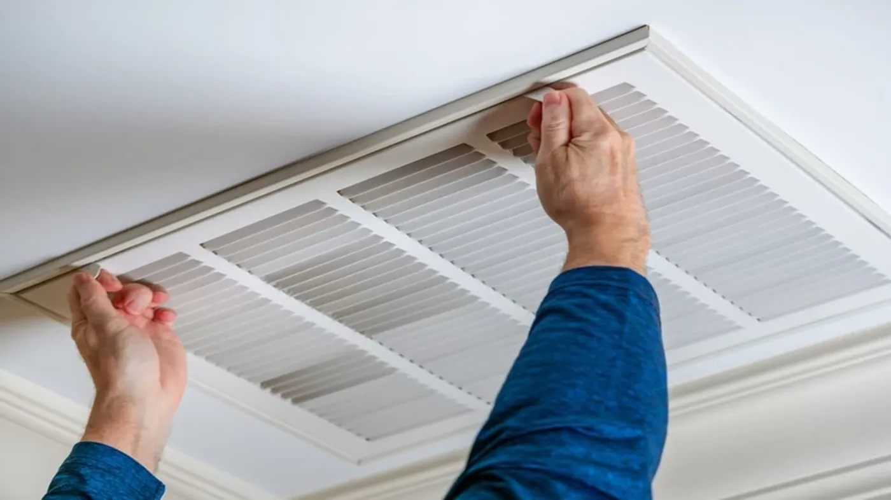
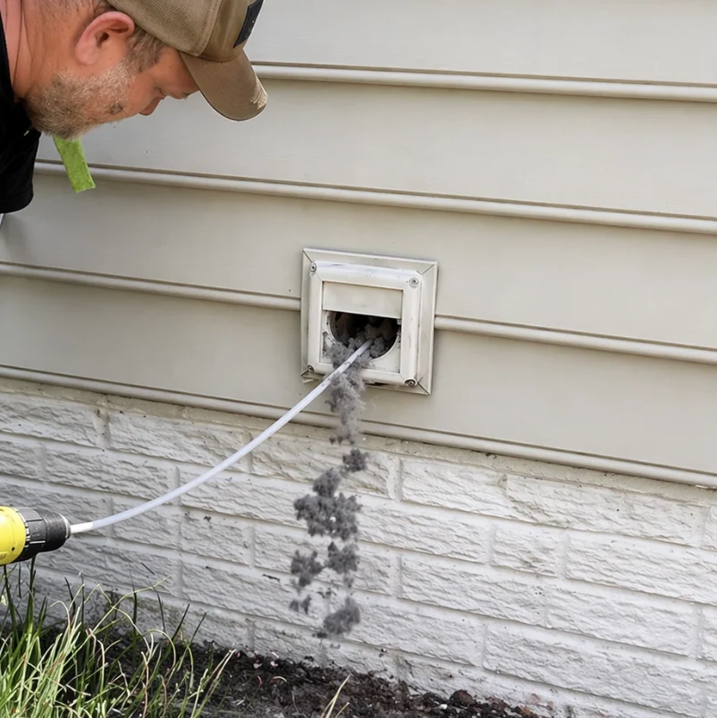
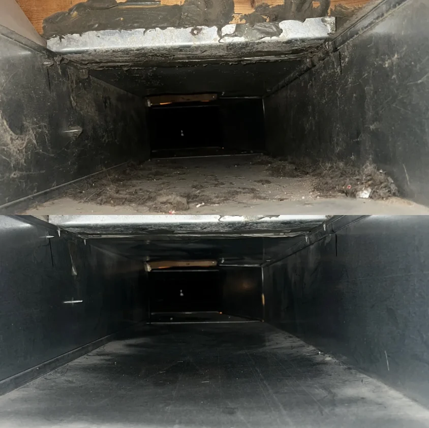
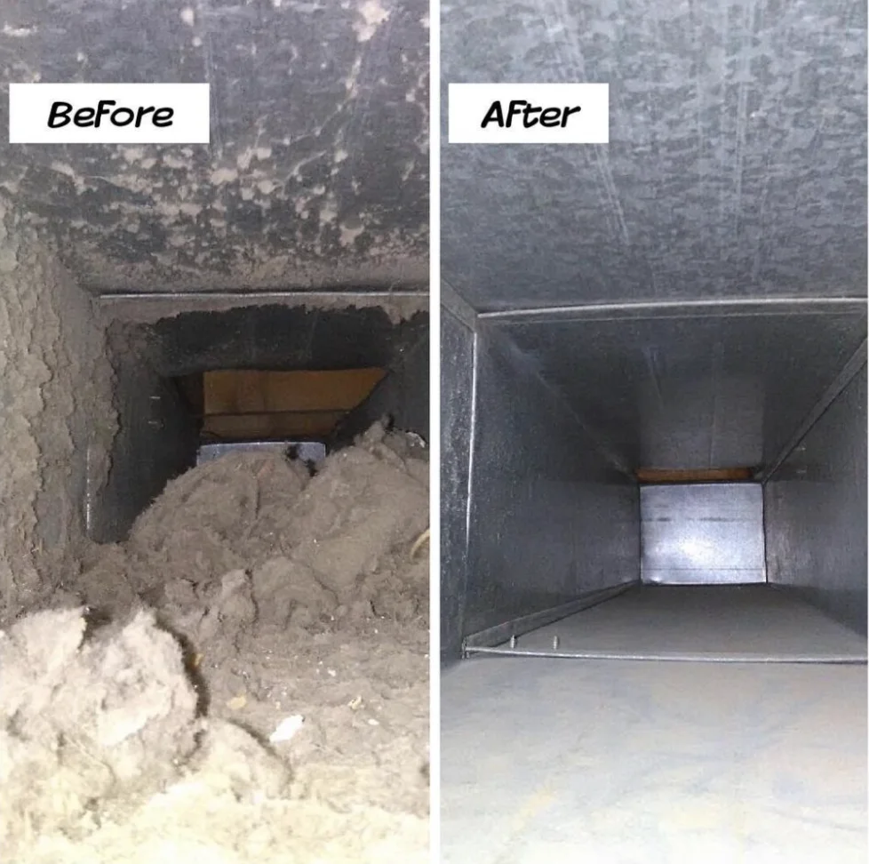

San Antonio Air Duct Cleaners clears dust, pollen and debris out of your home’s ductwork so the air your family breathes is actually clean — not just cool. Licensed, local, and upfront about pricing before we start.

Air duct cleaning is the process of removing dust, pollen, pet dander, construction debris and other buildup from the supply and return ductwork that carries conditioned air through your home. In San Antonio, that ductwork usually runs through an attic that regularly hits well over 130 degrees in summer, which bakes dust and any moisture into a fine grit that clings to the inside of the metal or flex duct over time.
A real cleaning job connects a negative-air vacuum to the main trunk line, then works through every branch with rotary brushes or compressed-air tools to knock debris loose so the vacuum can pull it out through a HEPA filter. It’s different from just wiping down the visible vent covers — those only reach a few inches into the system, while the buildup that actually affects air quality sits farther back where you can’t see it.
Homeowners across the San Antonio metro — from Alamo Heights to Stone Oak to the Southside — call us for the same basic reason: the air coming out of their vents doesn’t feel or smell as clean as it should, and they want someone who can actually show them what’s inside the ducts before recommending a fix.

Not every home needs duct cleaning on a fixed schedule. These are the situations where it actually makes a difference:
Every job follows the same core process, adjusted for your home’s layout and how the ductwork is routed:
We open a few supply and return registers and run a camera or visual check to see how much buildup is actually in the system before quoting a final price.
Registers not being actively cleaned are sealed off and floors near the work area are protected so debris stays contained to the ductwork itself.
A high-powered vacuum connects to the main trunk line and creates negative pressure through the whole system while we agitate each branch line.
Rotary brushes and compressed-air tools knock loose the dust, debris and buildup stuck to the interior walls of the ductwork, branch by branch.
Supply and return registers are cleaned by hand and we inspect the evaporator coil, since a dirty coil often gets blamed on the ducts instead.
We show you before-and-after photos from inside the ducts and walk through anything we found — leaks, disconnected lines, or areas that need follow-up.
Most single-system San Antonio homes take 2 to 4 hours start to finish. Larger homes or ones with two HVAC systems can run 4 to 5 hours, especially if the attic access is tight or the ductwork hasn’t been serviced in a decade or more.

Before-and-after camera photos come standard on every job, so you’re not just taking our word for what came out of your ducts.

We don’t advertise a $99 flyer price and pad the bill on-site. The range we quote after inspection is the range you pay.
Our crew works attic ductwork routinely in San Antonio’s summer heat, and we schedule morning appointments in peak season so the work gets done before attic temperatures peak.
Pricing depends mostly on square footage, the number of supply and return vents, and how accessible the ductwork is. Here’s a realistic breakdown for the San Antonio area:
| Home Size / Job | Typical Range |
|---|---|
| 1,200–1,800 sq ft, single system | $149–$275 |
| 1,800–2,800 sq ft, single system | $275–$450 |
| Two HVAC systems | Add $100–$175 |
| Duct mold treatment (add-on) | Add $150–$300 |
Homes with crawl-space ductwork instead of attic runs, or systems that haven’t been cleaned in over a decade, sometimes land above these ranges because of extra debris or damaged sections that need sealing. We’ll always walk you through the number before any work starts — there’s no surprise line item at the end.
Most San Antonio homes between 1,200 and 2,800 square feet pay between $149 and $450 for a standard whole-home air duct cleaning, depending on the number of vents, how accessible the ductwork is, and whether the system runs through an attic or a crawl space. Larger homes, homes with two HVAC systems, or ducts that need mold treatment usually land toward the higher end of that range. We give you a firm number after a short walkthrough — not a phone-quote guess.
A single-system San Antonio home typically takes 2 to 4 hours from setup to final inspection. Homes with two HVAC systems, heavy dust from new construction, or difficult attic access can run closer to 4 to 5 hours. We’ll give you a realistic window before we start, not just a rough guess.
It’s worth it when there’s a specific trigger — visible dust blowing from the vents, a musty smell when the AC kicks on, recent renovation or new-build dust still in the system, evidence of rodents in the attic, or allergy symptoms that spike every time the AC runs. If none of those apply and your ducts were cleaned in the last few years, you probably don’t need it yet, and we’ll tell you that honestly during the walkthrough.
Most San Antonio homes do well with duct cleaning every 3 to 5 years. Because our AC systems run nearly year-round here, ductwork moves a lot more air than it would in a milder climate, which pulls in more dust over the same stretch of time. Homes with pets, a household member with allergies, or a system that runs through an unsealed attic often benefit from cleaning closer to every 2 to 3 years.
Yes. Dryer vent cleaning is one of our core services and is commonly bundled with air duct cleaning since both jobs clear lint and debris from home ventilation. A blocked dryer vent is one of the leading causes of residential dryer fires nationally, so we recommend having it checked annually even if your ducts don’t need service yet.
Watch for visible dust kicking out of the supply registers when the AC starts, a musty or stale smell that shows up specifically when the system runs, dust that resettles on furniture within a day or two of cleaning, unexplained allergy or sinus flare-ups indoors, and any sign of rodent activity in the attic near the ductwork. One or two of these together is usually enough reason to schedule an inspection.